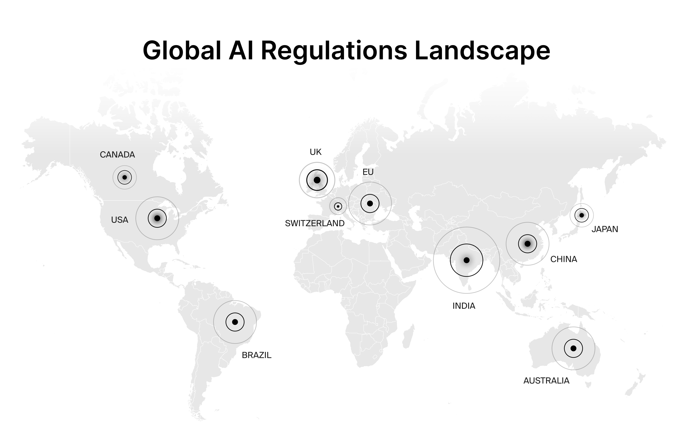
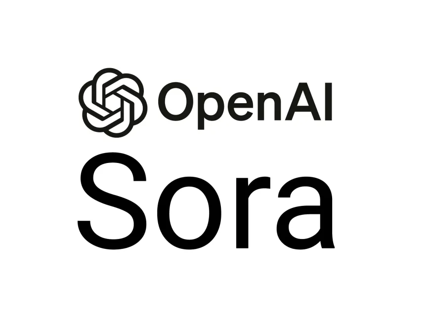
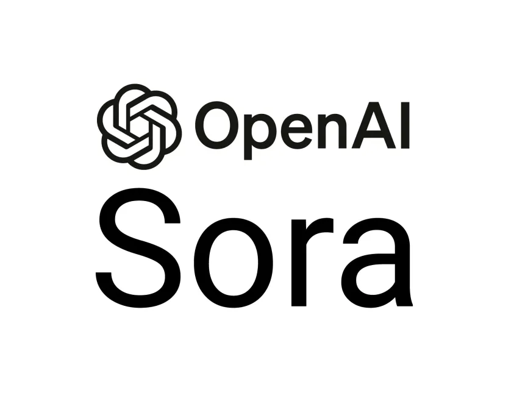

What is Generative AI?
Generative AI models transforms many facets of our lives, including education, corporations, entertainment, and a range professions. It works by learning from patterns and structures of the data fed to it, hence generates new but similar data. Two major components completes generative ai: generator network and discriminator network. Generator network bases on data input to generate new outputs, for instance, images, sounds videos etc.. Discriminator network compares the training data and the real life examples to classify samples. For instance, generator network could output new images of cats by learning from the dataset of cat images. Whereas, discriminative AI model learn from dataset of cats and dogs images, hence used to classify new images of cats and dogs. These two networks can be trained together. As the generator tries to cheat the discriminator, and the driscriminator tries to classify it accurately. Through this adversarial training process, the generator improves its ability to generate higher quality samples which are hard to distinguish from real life sources.
More details More detailsWhat are the risks of generative AI?
First, AI might be inaccurate. Generative AI may fabricate inaccurate response due to its early development. Second, intellectual property issues. When generative ai is trained with copyrighted data, legal concerns may arise due to the ownership of the generated content. Third, privacy concerns. If the training data consists sensitive information, the generated information may face ethical or legal concerns, as the use of sensitive information might not have received consent.
Any policies to solve the risks?
The European Union passed the world's first AI act to regulate artificial intelligence in 2023.
Generative AI like chatgpt has to comply with transparency requirements and EU copyright law, according to the European Parliament. For instance, generative ai has to be designed to prevent generating illegal content, or publishing outputs of copyrighted data. However, this law does not aim at banning all use of artificial intelligence. Conversely, it aims to support and encourage companies to develop AI models by providing testing environment, while eliminating unsafe AI systems.
Stance of other countries: AI regulations in other places?
| Country | Stance | Actions |
|---|---|---|
| The United States | No unified AI regulation | Adapt case by case strategy to regulating AI. They established federal guidelines to govern AI sector, including 'Promoting the Use of Trustworthy Artificial Intelligence in the Federal Government' and proposed bill AI training Act. |
| China | Actively introducing AI regulations | Some AI applications are already regulated, for example,Ethical Norms for New Generation AI and Opinions on Strengthening the Ethical Governance of Science and Technology |
| United Kingdom | No holistic AI regulation | Adopt context based practice, using existing laws for AI regulation.More details |
Some popular generative AI
Midjourney
It is a AI-image generator that turn text descriptions into captivating images.
Synthesia
Synthesia is an AI video generator that creates videos from text. And not just any videos, but videos with real human presenters
Chatgpt
We could use it for conversations, automate tasks, provide detailed response from the
 Sora
It creates AI-generated video from text. It creates realistic and imaginative scenes from text instructions.

Sora
It creates AI-generated video from text. It creates realistic and imaginative scenes from text instructions.
